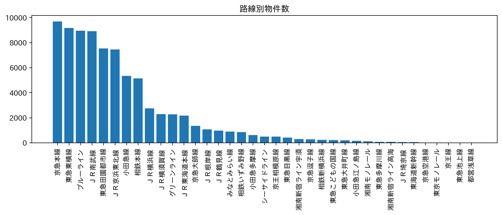
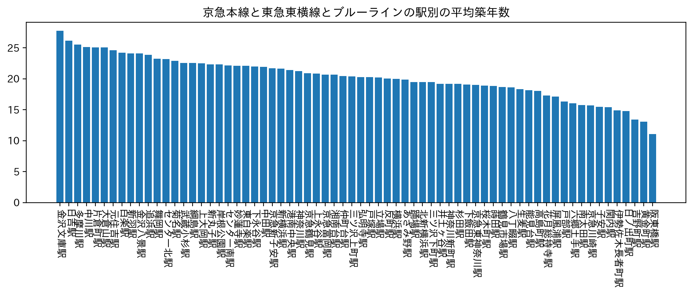
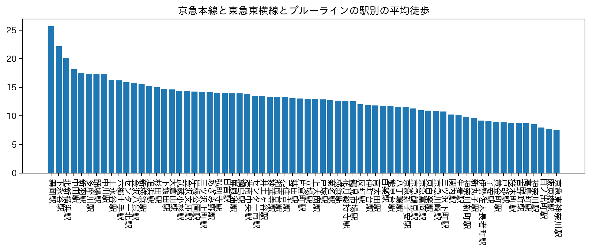

第６回
賃貸分析
路線別物件数

駅が多すぎてそのままグラフにすると読み取ることができなかった。
そこで、上グラフの路線別物件数で多い3路線京急本線、東急東横線、ブルーラインを取り出して調べることにした。
3路線と平均築年数

上グラフから、阪東橋、黄金町、吉野町の平均築年数が低いことがわかる。
3路線と平均徒歩

上グラフから、京急東神奈川、阪東橋、日ノ出町の平均徒歩が低いことがわかる。
3路線の平均築年数と平均徒歩

これらの２つのグラフをかけ合わせたこのグラフからは、阪東橋が一歩出て好条件であることがわかる。
女子大生の場合、駅からの距離が近いこと、そして築年数の低さによる治安の良さが重要である。
そのため、神奈川大学の女子大生は阪東橋付近で物件を探すことをおすすめする。